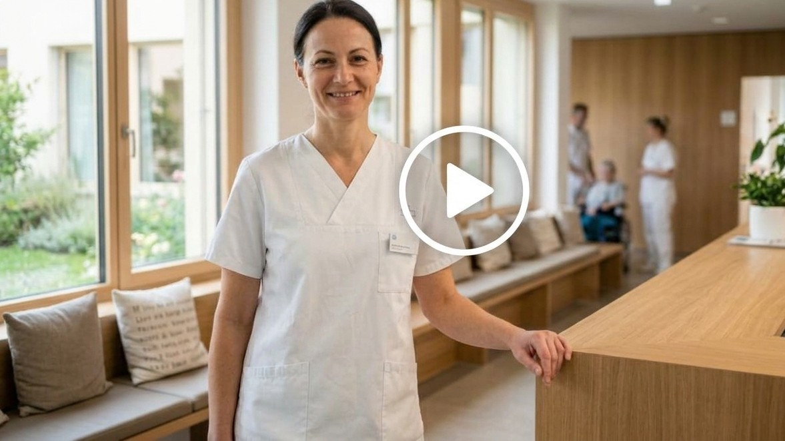

Ihr Eintritt, Schritt für Schritt
Danke für Ihr Vertrauen in die Klinik St. Anna. Diese Seite führt Sie vom Tag der Anmeldung bis zur ersten Woche zu Hause. Jeder Abschnitt erklärt, was wir tun und was Sie beitragen. Sie können diese Seite auch Ihren Angehörigen zeigen.
So läuft Ihr Eintritt ab
- Nach der Anmeldung: Gesundheitsfragebogen und Anmeldebestätigung
- Bis zum Eintritt: Narkosegespräch, Abholung und erste Woche zu Hause organisieren
- Am Vortag: Eintrittszeit per SMS, Essen und Trinken ausrechnen, packen
- Am Eintrittstag: Ankommen, warten, Operation
- Im Spital: Visite, Erholen, Austritt bis 10 Uhr
Das Wichtigste auf einer Seite, auch zum Ausdrucken Ich begleite jemanden Italiano · Français: foglio informativo
Wenn Sie mögen: Wir zeigen Ihnen im Video in zwei Minuten, wie Ihr Aufenthalt bei uns aussieht, von der Anmeldung bis zurück nach Hause. Sie müssen sich dabei nichts merken, denn wir führen Sie unterwegs durch jeden Schritt. Sie können auch einfach weiterlesen

Kommen Sie zu einer Herzkatheter-Untersuchung? Für Sie gilt ein eigener, kürzerer Fahrplan: Herzkatheter: Ihr Fahrplan →
Für alle anderen Eingriffe geht es hier weiter.
So erreichen Sie uns. Jede Frage ist willkommen; rufen Sie lieber einmal mehr an.
- Eintritt, Operationstermin: Patientendisposition, +41 41 208 30 12, Mo bis Fr 8 bis 12 und 13 bis 17 Uhr
- Gesundheitsfragebogen, medizinische Unterlagen und Narkose: Anästhesie, Telefonnummer
- Ihre Operation: Rufen Sie die Praxis Ihrer Operateurin oder Ihres Operateurs an
- Dringend, rund um die Uhr: Klinik-Nummer. Bei Atemnot oder Brustschmerz direkt 144
Wo stehen Sie gerade?
Ist Ihre Operation kurzfristig geplant? Manchmal liegen zwischen Anmeldung und Operation nur wenige Tage. Die Reihenfolge unten bleibt dann gleich. Alles kommt nur etwas dichter. Sie haben nichts verpasst. Zuerst zählen: der Fragebogen, Ihre medizinischen Unterlagen, die Regeln für den Eintrittstag, und wer Sie nach dem Austritt nach Hause bringt.
Alles Weitere steht unten, in der Reihenfolge, in der es kommt. Was bei Ihnen schon erledigt ist, überspringen Sie einfach.
Nach der Anmeldung: Fragebogen und Bestätigung
Wann Ab dem Tag, an dem Ihre Ärztin oder Ihr Arzt Sie bei uns anmeldet.
Was wir tun
Sie haben von uns eine E-Mail mit dem Link zum Gesundheitsfragebogen der Anästhesie erhalten. Dazu kam auch eine SMS mit einem Sicherheitscode für den Fragebogen. Die Anmeldebestätigung per Post mit dem Eintrittsdatum und dem Eintrittsformular folgt, je nach Termin innerhalb von Tagen oder Wochen. Ab jetzt bereitet unser Team Ihren Eintritt vor.
So prüfen Sie, ob eine Nachricht von uns kommt
Wir fragen per SMS, Email oder Internet nie nach Passwörtern oder Bankdaten. Wir verlangen nie eine Zahlung. Sind Sie unsicher, ob die Nachricht von uns ist? Suchen Sie selbst im Internet nach der Internetseite der Klinik St. Anna. Rufen Sie die Nummer an, die dort steht.
Was Sie beitragen
- Den Gesundheitsfragebogen innerhalb von 5 Tagen nach der E-Mail ausfüllen, allein oder mit jemandem zusammen. Rechnen Sie mit 10 bis 60 Minuten. Falls Sie ihn schon ausgefüllt haben, ist dieser Punkt erledigt.
- Ihnen fällt das Ausfüllen am Bildschirm schwer, oder es gibt technische Schwierigkeiten: Lassen Sie den Fragebogen unausgefüllt. Nach etwa 5 Tagen rufen wir Sie von uns aus an.
- Das Eintrittsformular aus dem Brief ausfüllen, unterschreiben und zurücksenden, Frist.
Für Angehörige und Begleitpersonen: Sie dürfen den Fragebogen gemeinsam ausfüllen.
Bis zum Eintritt: Wir besprechen die Narkose mit Ihnen
Wann Zwischen Anmeldung und Eintritt. Das können mehrere Wochen sein oder wenige Tage.
Was wir tun
Ihre Narkose besprechen wir persönlich mit Ihnen, spätestens am Vortag am Telefon (siehe Am Vortag). Je nach Eingriff und Gesundheit laden wir Sie vorher zusätzlich in die Anästhesie-Sprechstunde ein. Das Gespräch findet in der Klinik oder am Telefon statt. Um den Termin kümmern wir uns. Wir kontaktieren Sie. Im Gespräch mit der Anästhesistin oder dem Anästhesisten können Sie alles fragen, was Sie zur Narkose wissen möchten. Brauchen Sie nach dem Aufenthalt eine Rehabilitation oder Spitex? Dann planen wir das jetzt und rufen Sie an.
Was Sie beitragen
- Organisieren, wer Sie zum Eintritt hinfährt und nach dem Austritt abholt. Nach einer Narkose dürfen Sie 24 Stunden nicht selbst fahren.
- Organisieren, wer Sie in der ersten Woche zu Hause unterstützt: Einkaufen, Kochen, Treppensteigen.
- Ihre Medikamente nehmen Sie weiter wie gewohnt. Blutverdünner und Diabetesmedikamente pausieren Sie nur nach Absprache mit der Anästhesie. Im Zweifel rufen Sie die Anästhesie an: Anästhesie, Telefonnummer.
- Bei Fieber, Husten oder Erkältung rufen Sie die Anästhesie an: Anästhesie, Telefonnummer. Das gilt auch kurz vor dem Eintritt und wenn es Ihnen insgesamt schlechter geht. Wir besprechen dann mit Ihnen die Planung.
- Rauchen: Jeder rauchfreie Tag vor der Operation hilft. Je früher Sie aufhören, desto besser heilt die Wunde.
- Bewegen: Jeder Spaziergang vor der Operation hilft Ihnen, danach schneller wieder auf die Beine zu kommen.
Für Angehörige und Begleitpersonen: Jetzt ist die Zeit, das Praktische zu klären: wer fährt, wer in der ersten Woche da ist, wer sich um Haustiere und Post kümmert. Schauen Sie auch die Wohnung an: Wege, Treppen, Stolperfallen, Teppiche, Dusche.
Am Vortag: Uhrzeit und Vorbereitung
Wann Am Tag vor dem Eintritt. Bei Eintritt am Montag: am Freitag davor.
Was wir tun
Ihre Eintrittszeit. Sie erhalten sie heute per SMS. Ohne Handynummer rufen wir Sie an. Haben Sie bis 14 Uhr nichts von uns gehört, rufen Sie uns an: Patientendisposition, Nummer, 13 bis 17 Uhr.
Der Anruf zur Narkose. Heute ruft Sie Ihre Anästhesieärztin oder Ihr Anästhesiearzt an, auch wenn Sie schon in der Sprechstunde waren. Vor einem Eingriff am Montag kann dieser Anruf schon am Freitag oder am Sonntag kommen. Halten Sie dafür Ihre Medikamentenliste bereit. Zeitfenster des Anrufs; was gilt, wenn Sie den Anruf verpassen: Rückrufnummer oder zweiter Versuch.
Was Sie beitragen
- Die Eintrittszeit aufschreiben und zwei Uhrzeiten ausrechnen: bis wann Sie essen dürfen (6 Stunden vorher) und bis wann Sie trinken dürfen (2 Stunden vorher). Ein Rechenbeispiel steht gleich unten.
- Telefonisch erreichbar sein.
- Packen. Die Liste steht gleich unten.
Was Sie mitbringen
- Amtlicher Ausweis und Versichertenkarte
- Ihre Medikamente in der Originalpackung und die Medikamentenliste (Dosierungsplan)
- Falls vorhanden: Allergiepass, Blutverdünnerausweis, Diabetesausweis, Schrittmacherausweis, Patientenverfügung
- Ihre gewohnten Hilfsmittel: Brille, Hörgerät mit Batterien, Gehhilfe, CPAP-Gerät (Ihr Atemgerät für die Nacht)
- Bequeme Kleidung, feste Schuhe mit rutschfester Sohle, Toilettenartikel
- Etwas zum Lesen oder Hören für die Wartezeit
- Zu Hause bleiben: Schmuck, Wertsachen, grössere Geldbeträge
TODO Abgleichen mit Merkblatt und Anmeldebestätigung
Rechenbeispiel
Die Eintrittszeit in der SMS lautet 10:00 Uhr.
| Rechnung | Ergebnis | |
|---|---|---|
| Letzte leichte Mahlzeit | 10:00 minus 6 Stunden | bis 04:00 Uhr |
| Letztes Glas Wasser, Tee oder schwarzer Kaffee | 10:00 minus 2 Stunden | bis 08:00 Uhr |
| Ab dann | nichts mehr essen und trinken |
Praktisch heisst das: Am Abend vorher normal essen, in der Nacht nichts mehr, am Morgen bis 08:00 Uhr Wasser, Tee oder schwarzer Kaffee. Bei einer Eintrittszeit um 14:00 Uhr dürfen Sie bis 08:00 Uhr ein leichtes Frühstück essen und bis 12:00 Uhr Wasser, Tee oder schwarzen Kaffee trinken.
Für Angehörige und Begleitpersonen: Rechnen Sie die Zeiten für Essen und Trinken gemeinsam aus und schreiben Sie sie gut sichtbar auf. Beim Essen und Trinken am Morgen passieren die meisten Fehler.
Am Eintrittstag: Ankommen, warten, Operation
Wann Vom Aufstehen bis zum Abend.
Was wir tun, und wie der Ablauf ist
Morgens zu Hause. Bis 6 Stunden vor der Eintrittszeit eine leichte Mahlzeit, bis 2 Stunden vorher Wasser, Tee oder schwarzer Kaffee. Danach nichts mehr, auch keine Bonbons oder Kaugummi. So schützen Sie Ihre Atemwege während der Narkose. Medikamente wie gewohnt mit einem Schluck Wasser, ausser die Anästhesie hat mit Ihnen etwas anderes vereinbart.
Anreise. Adresse, Eingang, öffentlicher Verkehr. Während des Umbaus sind Parkplätze knapp. Kommen Sie am besten mit dem öffentlichen Verkehr oder lassen sich bringen.
Ankommen. Sie melden sich an der Réception und erhalten Ihr Patientenarmband mit Name, Geburtsdatum und einem Barcode. Im Lauf des Tages fragen wir Sie mehrmals nach Name und Geburtsdatum. So stellen wir sicher, dass jede Behandlung bei der richtigen Person ankommt. An der Réception erfahren Sie, wo es weitergeht.
Zurzeit ist die Klinik St. Anna im Umbau
Während des Umbaus der Klinik St. Anna (ANNAplus, voraussichtlich bis Datum) bereiten wir Sie in der Tagesklinik auf die Operation vor. Die Plätze dort sind mit Vorhängen abgetrennt. Das gilt für alle Patientinnen und Patienten, unabhängig von der Versicherung. Für vertrauliche Gespräche gibt es einen Besprechungsraum. Ihr Zimmer beziehen Sie nach der Operation.
Warten. Wir sind ein Akutspital und behandeln auch Notfälle. Der Operationsplan wird deshalb laufend abgestimmt. Zwischen Ihrer Ankunft und der Operation vergeht deshalb Zeit: manchmal eine halbe Stunde, manchmal mehrere Stunden. Wir halten Sie auf dem Laufenden, wann Ihre Operation beginnt und machen Ihnen die Wartezeit möglichst angenehm.
Operation. Eine Pflegefachperson begleitet Sie in den Operationsbereich. Dort empfängt Sie das Operationsteam und bleibt während der ganzen Operation bei Ihnen. Wenn Sie eine Narkose bekommen, erwachen Sie nach der Operation im Aufwachraum oder, bei grösseren Eingriffen, auf der Überwachungsstation, wo wir Sie in der ersten Zeit enger betreuen. Dort sorgt das Team dafür, dass Sie sich möglichst wohl fühlen. Danach bringt das Team Sie in Ihr Zimmer.
Was Sie beitragen
- Pünktlich zur Eintrittszeit an der Réception sein, Ausweis bereithalten.
- Sagen, wenn etwas unklar ist, wehtut oder Sie etwas brauchen. Fragen sind erwünscht, Nachfragen auch.
- Mit Essen und Trinken warten, bis die Pflege das OK gegeben hat
Für Angehörige und Begleitpersonen: Sie dürfen bis zur Tagesklinik mitkommen und dort bis zur Abholung in den Operationsbereich bleiben. Hinterlassen Sie Ihre Telefonnummer. Wir rufen an, sobald die Patientin oder der Patient im Zimmer ist. Rechnen Sie mit mehreren Stunden. Sie können in dieser Zeit die Klinik verlassen, wir erreichen Sie telefonisch.
Die Tage im Spital
Wann Vom Abend der Operation bis zum Austritt, meist 2 bis 5 Tage.
Was wir tun
Ihre Ärztin oder Ihr Arzt besucht Sie täglich und bespricht mit Ihnen den Verlauf und den Austrittstag. Die Pflege ist rund um die Uhr für Sie da, mit der Klingel am Bett. Sagen Sie uns, sobald Sie Schmerzen oder Übelkeit spüren. Dann können wir früh helfen. Mit jedem Tag kommen Sie dem Alltag näher. Besuch: Besuchszeiten.
Was Sie beitragen
- Jede Beschwerde melden, auch kleine. Dann können wir sie behandeln.
- Aufstehen und gehen, sobald die Pflege es erlaubt. Die ersten Schritte sind die wichtigsten: Sie bringen Kreislauf, Atmung und Verdauung in Schwung, und die Kraft kehrt schneller zurück.
- Fragen aufschreiben, wenn sie Ihnen einfallen, und bei der Visite stellen.
Für Angehörige und Begleitpersonen: Ein Angehöriger darf bei der Visite dabei sein, wenn die Patientin es wünscht. Fragen Sie nach dem voraussichtlichen Austrittstag und was zu Hause gebraucht wird: Hilfsmittel, Spitex, Rezepte.
Austritt und die erste Woche zu Hause
Wann Am Austrittstag bis 10 Uhr, dann die ersten sieben Tage.
Was wir tun
Sie erhalten einen Austrittsbericht, Rezepte und die Termine für Nachkontrollen. Die Pflege erklärt Ihnen Wundversorgung und Medikamente und gibt Ihnen alles schriftlich mit. Zu Hause erholen Sie sich weiter, in Ihrem eigenen Tempo. Die Kraft kommt Woche für Woche zurück.
Wir wünschen Ihnen einen guten Aufenthalt bei uns und eine gute Erholung zu Hause.
Was Sie beitragen
- Das Zimmer bis 10 Uhr freigeben. Lassen Sie sich abholen.
- Rezepte in der Klinikapotheke oder einer Apotheke Ihrer Wahl einlösen.
- Bei den Zeichen unten sofort anrufen, auch nachts.
Sofort melden
Leichte Schmerzen, etwas Schwellung und Müdigkeit sind in den ersten Tagen normal und nehmen von Tag zu Tag ab. Sofort anrufen bei Fieber über 38.5 Grad, zunehmenden Schmerzen trotz Medikamenten, Rötung oder Nässen der Wunde, Atemnot, Brustschmerz oder Wadenschmerz: Klinik-Nummer, rund um die Uhr. Bei Atemnot oder Brustschmerz direkt 144.
Für Angehörige und Begleitpersonen: In der ersten Nacht zu Hause sollte jemand erreichbar sein. Die Zeichen oben gelten auch für Sie: Wenn Ihnen etwas Sorgen macht, rufen Sie an.
War diese Seite hilfreich?
Ich habe eine Frage: An wen wende ich mich?
Kurzer Draht statt langer Suche. Jede Frage ist willkommen, denn lieber einmal mehr angerufen:
- Eintritt, Operationstermin: Patientendisposition, +41 41 208 30 12, Mo bis Fr 8 bis 12 und 13 bis 17 Uhr
- Gesundheitsfragebogen, medizinische Unterlagen und Narkose: Anästhesie, Telefonnummer
- Ihre Operation: Rufen Sie die Praxis Ihrer Operateurin oder Ihres Operateurs an
- Dringend, rund um die Uhr: Klinik-Nummer. Bei Atemnot oder Brustschmerz direkt 144
| Geprüft am | Datum |
| Nächste Prüfung | Datum + 2 Jahre |
| Fachliche Freigabe | Name, Funktion |
Diese Seiten sind ein Prototyp. Alle Inhalte sind fiktive, fachlich nicht geprüfte Beispieltexte und dienen ausschliesslich der Veranschaulichung von Struktur und Sprache.